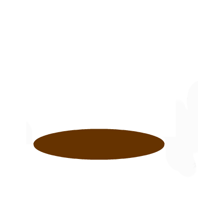

|  | ||
|
Hello! This game is Wack-A-Mole and works fairly similar to it. Moles will start appearing out of the holes and your job is to click them before they hid back down. But watch out, this starts off slowly but in the end will get much faster.
Good Luck! |